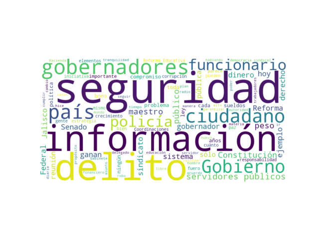
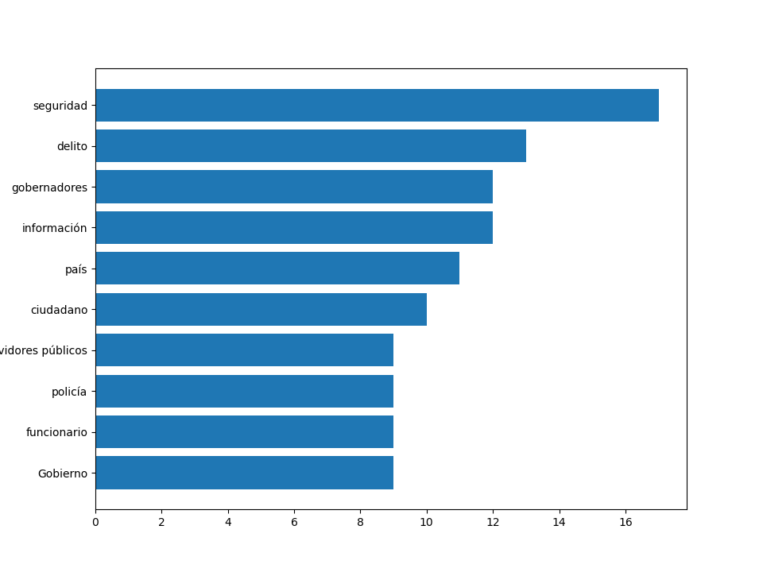

¿De qué temas se habla en la mañanera?
Este sitio usa un par de sencillas visualizaciones de datos para mostrar las palabras más mencionadas en la conferencia del presidente de México, Andrés Manuel López Obrador.
Esto incluye tanto lo dicho por el presidente como por otros funcionarios, así como las preguntas de reporteros.
Ejemplo: Mañanera del 4 de diciembre de 2018 - Ver todas las conferencias
Nube de Palabras
Gráfica de Barras
Palabras más mencionadas: seguridad, delito, gobernadores, información, país, ciudadano, servidores públicos, policía, funcionario, gobierno.
Título: 04.12.18 Versión estenográfica Conferencia de prensa del presidente de México, Andrés Manuel López Obrador
Consulta las visualizaciones de todas las conferencias.
Encuentra las visualizaciones de conferencias de otras fechas en la sección Conferencias Diarias
Sigue la cuenta de Twitter @PalabraMananera para ver las nuevas visualizaciones de cada día.
¿Para qué sirve esto?
Para identificar rápidamente los temas tratados en las mañaneras del presidente AMLO.
Las visualizaciones mostradas son herramientas muy sencillas de exploración de datos. Para obtener información completa sobre los temas mencionados en las conferencias se recomienda visitar la fuente de las mismas, debajo de las gráficas puedes encontrar el enlace a la transcripción oficial de cada conferencia.
Puedes obtener más información sobre temas de análisis y visualización de datos en las siguientes fuentes: